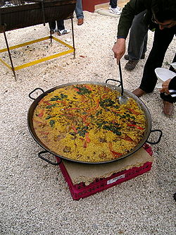

El arroz (del árabe الروز ar-rūz; a su vez del griego ὄρυζα oryza 1) es la semilla de la palnta Oryza sativa (simplemente arroz o arroz asiático) o de Oryza glaberrima (arroz africano). Se trata de un cereal considerado alimento básico en muchas gastronomías del mundo. 2
El arroz es el segundo cereal más producido en el mundo (741,5 millones de toneladas), detrás del
maíz (1,000 millones de toneladas) y por delante del trigo
(713 millones de toneladas). 3 4 Debido a que el maíz es producido con otros muchos
propósitos aparte del consumo humano, se puede decir que el arroz es el cereal más importante en la
alimentación humana y que contribuye de forma muy efectiva al aporte calórico
de la dieta humana actual; es fuente de una quinta parte de las calorías
consumidas en el mundo. 5 Desde 2008, se ha realizado un racionamiento
en algunos países debido a la carestía de arroz.6 En paises como
Bangladés y Camboya puede llegar a representar casi las tres cuartas
partes de la alimentación de la población. 7 Se dedican muchas hectáreas
al cultivo del arroz en el mundo. Así como también en la República Dominicana el arroz
forma parte del plato tradicional de esa isla y se cultiva a gran escala en la zona norte de la isla. Se sabe
que el 95 % de este cultivo se extiende entre los paralelos 53º, latitud norte, y 35º,
latitud sur. Su origen es objeto de controversia entre los investigadores; se discute si fue en China
o en India.
Diferentes variedades de arroz: blanco, integral, rojo y salvaje.
Arroz frito, una especialidad común en la cocina asiática.
Arrozal en Angkor, Camboya
| Principales productores de arroz (2018) (millones de toneladas) 8 | |
| China | 212,1 |
| India | 172,5 |
| Indonesia | 83,0 |
| Bangladés | 56,4 |
| Vietnam | 44,0 |
| Tailandia | 32,1 |
| Birmania | 25,4 |
| Filipinas | 19,0 |
| Brasil | 11,7 |
| Pakistán | 10,8 |
| Total mundial | 782,0 |
Fuente 9
El arroz (Oryza sativa) es una monocotiledónea pertenece a la familia Poaceae(gramíneas).
Las raíces son delgadas, fibrosas y fasciculadas. Posee dos tipos de raíces: las seminales que se originan de la radícula y son de naturaleza temporal, y las raíces adventicias secundarias que tienen una libre ramificación y se forman a partir de los nudos inferiores del tallo joven. Estas últimas sustituyen a las raíces seminales.
El tallo se forma de nudos y entrenudos alternados. Es cilíndrico, nudoso y mide de 60 a 120 cm de longitud. Las hojas son alternas, envainadoras, con el limbo lineal, agudo, largo y plano. En el punto de reunión de la vaina y el limbo se encuentra una ligula membranosa, bífida y erguida, que presenta en el borde inferior una serie de cirros largos y sedosos.
Las flores son de color verde blanquecino y están dispuestas en espiguillas cuyo conjunto constituye una panoja grande y terminal.
Existen cerca de diez mil variedades de arroz. Todas ellas entran en una de las dos subespecies de Oryza sativa,7 la variedad índica, que suele cultivarse en los trópicos, y la japónica, que se puede encontrar tanto en los trópicos como en las zonas de clima templado y que se caracteriza por su alto contenido en almidón del tipo amilosa (arroz glutinoso). Por regla general, cuanto más amilosa contiene un grano de arroz, más temperatura, agua y tiempo requiere para su cocción.
La mayoría de arroces se «pulen» previamente para liberarlos de la cubierta que los protege (que se convierte en salvado ), lo que elimina así aceites y enzimas del arroz. El resultado es un grano de arroz que se mantiene estable durante meses.
Arroz de grano medio: Arroz bomba.
La categorización habitual de los arroces de cocina es:
Arroz marrón.
Arroz integral
Antes de ser comercializado, el arroz puede recibir ciertos tratamientos: 11
El arroz posee más lisina que el trigo, el maíz y el sorgo.2 2 Contiene grandes cantidades de almidón 12 en forma de amilosa (que cohesionan a los granos). El otro contenido de almidón en el arroz, tras la amilosa, es la amilopectina. El arroz limpio, ya desprovisto de su salvado, suele tener menos fibra dietética que otros cereales y por lo tanto es más digestivo.13 Puede ser un alimento de sustento, a pesar de su bajo contenido en riboflavina y tiamina, y proporciona mayor contenido calórico y más proteínas por hectárea que el trigo y el maíz. Es por esta razón por la que algunos investigadores han encontrado correlaciones entre el crecimiento de la población y la expansión de su cultivo. 14
El arroz posee una elevada posición entre los cereales al considerar su aporte energético en calorías, así como en proteínas. La biodiversidad lo coloca en un 66 %, si bien posee pocas proteínas comparado con otros cereales.
El arroz no contiene gluten, por lo que es apto para el consumo por parte de personas que padecen trastornos relacionados con el gluten, tales como la enfermedad celíaca y la sensibilidad al gluten no celíaca.15
Un estudio 16 asume que el arroz pierde una cantidad significativa de calorías cuando se congela después de ser cocinado.
Morcilla de Aranda frita, y rodeada de sus ingredientes.
En la mayoría de las culturas el arroz integral se limpia y se le elimina la capa de salvado (rica en silicio) quedando el cariópside o grano. Uno de los problemas a los que se enfrentan los países productores de este cereal es la acumulación de cascarilla de arroz que se genera en el proceso de trillado en los molinos, pero existen procesos para transformar la cascarilla de arroz en fertilizante orgánico de gran calidad en el que la lombriz se alimenta solo de cascarilla. 17
Por regla general el arroz se cocina mediante aplicación de humedad y calor a los granos. La cocina de la India suele cocer el arroz en un exceso de agua de tal forma que el agua residual se elimina cuando la cocción se ha completado. La cocina de China y Japón emplea cantidades justas de agua, lo suficiente como para humedecer el arroz durante su calentamiento en una olla cerrada. Esta forma de cocinado favorece su ingesta mediante palillos. En la cocina mediterránea se suele enriquecer el arroz con el cocinado de aceites, mantequilla, caldos (fumet) y otros ingredientes diversos. De esta forma surgen los pilafs, los risottos y las paellas. La cocina persa elabora los polo mezclados con diversas carnes cocinadas en un exceso de agua, hasta que los granos de arroz se hinchan, alargándose varias veces su longitud natural. Suelen añadir frutas secas, nueces, entre otros, a menudo hasta que el agua se agota quedando un arroz marrón denominado tahdig (muy similar al socarrat de la paella).
Las formas de aplicar calor al arroz para su cocinado son diversas. En algunas ocasiones se fríe ligeramente en sartenes con aceite vegetal para elaborar una serie de platos denominado arroces fritos. O se le aplica vapor de agua mediante vaporeras y de esta forma se realiza la cocción al vaporcocción al vapor. Hoy en día se emplean en muchos países asiáticos electrodomésticos especializados como la olla arrocera. Las cocinas del sudeste asiático consideran el arroz como un alimento que debe estar presente en las tres comidas diarias. Se incluye habitualmente en los desayunos como un plato denominado congee.
Preparación de una paella.
Arroz con leche
Otras variedades de preparación del arroz a lo largo del mundo son la harina de arroz característica de su alto contenido de almidón, empleada en la elaboración de salsas, rellenos, etcétera. La harina es empleada debido a la característica especial de su fina textura. Su bajo contenido de protena hace que absorba poca cantidad de agua. Se emplea en la elaboración de la tempuras. Su masa no puede emplearse en la elaboración de panes: debido a la ausencia de gluten. El arroz en polvo se emplea en la cocina vietnamita, en la que se suele moler un arroz tostado que se vierte finalmente sobre platos. Entre el procesado de arroz se encuentran los fideos de arroz que se emplean como acompañamiento de sopas y dumplings de carne o verduras. Se emplea a veces en la elaboración de snacks.
Algunas preparaciones especiales de arroz son el mochi japonés (similares a los arancini italianos), el lao chao chino elaborado con arroz fermentado (empleando el Aspergillus oryzae). En algunos casos, el sushi se elaboró antiguamente siguiendo estas recetas. En algunas zonas de Asia se fermenta obteniendo bebidas alcohólicas como el sake. en la cocina china se elaboran vinos de arroz. El arroz con leche, un tradicional postre de varias gastronomías, se elabora cociendo el arroz en leche con azúcar, y una vez preparado, se le suele espolvorear canela por encima.
Este cereal también es utilizado en otro tipo de platos tradicionales españoles, como la morcilla de Burgos, un embutido, que gracias a la cocción, es un alimento de media conservación, y en la morcilla de Aranda, en la que se realizan dos cocciones.
El sabor del arroz depende en gran medida de la variedad así como del grado de procesamiento realizado en la molienda. Es interesante la investigación de los aromas en el arroz no solo por el consumo humano, sino por la percepción que tienen de este los insectos (potenciales plagas).18 Las partes exteriores del arroz poseen una mayor cantidad de aminoácidos libres, almidónx, minerales y proporcionalmente menos almidón. Es por esta razón por la que mientras más almidón tenga el arroz más sabor contendrá.7 El aroma estándar del arroz recuerda a las setas, a los pepinos proporcionando ciertos toques de palomitas así como aromas florales. Casi siempre son responsables los aldehídos de seis a diez carbonos en la molécula.19 18 Los arroces marrones poseen cierto contenido de vainillina.
Cerca de 100 compuestos volátiles se han detectado en arroz cocinado, y gran parte de ellos son contribuyentes del aroma final del arroz. En 10 algunos casos el principal compuesto que proporciona aroma al arroz es la 2-acetil-1-pirrolina (en especial aquellos arroces que poseen aromas similares a las palomitas de maíz), este aroma se encuentra presente de igual forma en la corteza del pan.18 No obstante, este aroma se libera durante su cocinado y decrece de forma progresiva, hasta ser mínimo al llegar al plato.
El arroz cocinado en agua es una fuente peligrosa de bacterias y se convierte en una fuente potencial de intoxicación alimentaria que debe vigilarse con atención.7 El arroz crudo suele llevar esporas (que sobreviven en altas temperaturas) en estado de hibernación como la bacillus cereus, que produce toxinas que afectan al sistema gastrointestinal. Los platos de arroz deben servirse inmediatamente tras su cocinado y los restos deben ser mantenidos en la nevera para evitar el crecimiento bacteriano. Algunas preparaciones culinarias evitan este crecimiento bacteriano mediante la aplicación de bactericidasbactericidas naturales, como en el caso del sushi al aplicar vinagre de arroz, o algunas preparaciones de la India al emplear la canela. Las ensaladas que contienen arroz son convenientemente acidificadas con vinagre para evitar el crecimiento bacteriano.
Secciones de onigiri japoneses.
Algunos estudios han demostrado que el consumo de arroz con su capa de salvado hace que se reduzca el nivel de colesterol en sangre. 20 Aunque el consumo de arroz con salvado es minoritario debido a su poca durabilidad.
1. https://www.etymonline.com/word/rice
2. Kiple, Kenneth F; Kriemhild Conee Ornelas (2000). Cambridge World Encyclopaedia of Food, Volume I, Animal, Marine and Vegetable Oils. Cambridge University Press:, Cambridge, England. pp. 375-379.
3. «ProdSTAT». FAOSTAT. Consultado el 7 de abril de 2009.
4. «Sustainable rice production for food security». Food and Agriculture Organization of the United Nations. 2003.
5. Smith, Bruce D. (1998). The Emergence of Agriculture (en inglés) (1ª edición). Nueva York: W H Freeman & Co. ISBN 0716750554.
6. [http://www.bbc.co.uk/worldservice/news/2008/04/080411_rice_seq_wt_sl.shtml BBC World Service - News - Global rice shortage
7. McGee, Harold (2004). On Food and Cooking: The Science and Lore of the Kitchen (en inglés) (ed. rev. edición). Nueva York: Scribner. p. 472. ISBN 0684800012.
8. «Rice Production by FAO Food and Agriculture Organization» (en inglés).
9. «Rice Production by FAO Food and Agriculture Organization» (en inglés).
10. G. Buttery, Ron; Jean G. Turnbaugh, Louisa C. Ling (1968). «Contribution of volatiles to rice aroma». J. Agric. Food Chem. 36 (5): 1006-1009.
11. G. Buttery, Ron; Jean G. Turnbaugh, Louisa C. Ling (1968). «Contribution of volatiles to rice aroma». J. Agric. Food Chem. 36 (5): 1006-1009.
12. «arroz». Diccionario de la lengua española. Consultado el 4 de noviembre de 2014. «1. m. Planta anual propia de terrenos muy húmedos, cuyo fruto es un grano oval rico en almidón.»
13. Hegsted, DM (1969). «Nutritional value of cereal proteins in relation to human needs». Protein-Enriched Cereal Foods for World Needs.
14. Lu, J.J.; T.T. Chang (1980). «Rice in its temporal and spatial perspectives». Rice: Production and Utilization.
15. Penagini F, Dilillo D, Meneghin F, Mameli C, Fabiano V, Zuccotti GV (18 Nov 18 2013). «Gluten-free diet in children: an approach to a nutritionally adequate and balanced diet». Nutrients (Revisión) 5 (11): 4553-65. PMC 3847748. PMID 24253052. doi:10.3390/nu5114553.
16. «Las calorías del arroz pueden reducirse mediante la congelación, según un estudio».
17. «Bio Arroz». Archivado desde el original el 23 de febrero de 2015. Consultado el 23 de febrero de 2015.
18. G. Buttery, Ron; Louisa C. Ling, Bienvenido O. Juliano, Jean G. Turnbaugh (1983). «Cooked rice aroma and 2-acetyl-1-pyrroline». J. Agric. Food Chem. 31 (4): 1515−1519.
19. De Kimpe, Norbert; Marian Keppens (1996). «Novel Syntheses of the Major Flavor Components of Bread and Cooked Rice». J. Agric. Food Chem. 44: 823-826. doi:10.1021/jf00118a036.
20. Hegsted, M. (1994). «Rice bran and rice bran oil may lower heart disease risk by decreasing cholesterol synthesis in the body». Louisiana agriculture 37 (2): 16-17. ISSN 0024-6735.